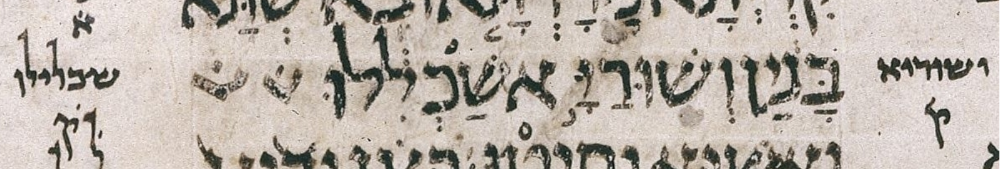
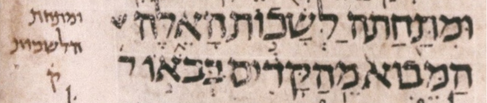
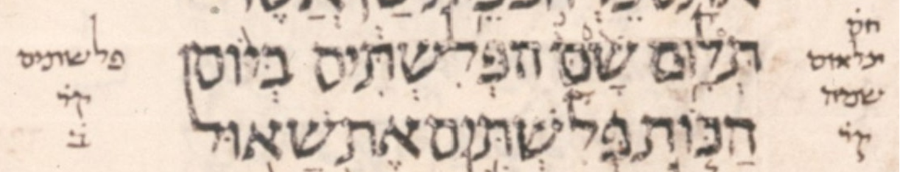
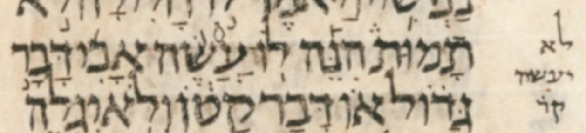
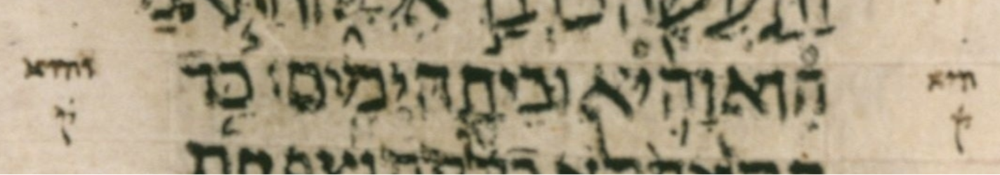

| bcv (tanach.us) | Ezra4:12 |
| bcv (Mwd) | Ezra4:12 |
| ab-uword | *אשכללו **וְשׁוּרַיָּ֣א |
| ab-word | *)#KLLW **W:/$W.RAY./F74) |
| diff type | miscellaneous |
| page | 449B |
| col-and-line | 2 25 |
This is part 2 of 2 of a change from k1q1×2 to k2q2. UXLC rejected this change.
I think I understand the impulse behind this WLC change, but nonetheless I find the change inadvisable. So I not only support UXLC’s rejection of this change but also advise WLC to revert this change in some future version.
My guess is that the impulse behind this change is that we are primarily dealing with a word boundary issue here. There is a ḥaser/malei issue later in the second word, but the primary issue is where the word boundary falls within the letters ושוריאשכל[י]לו. The table below shows the details.
| word boundary | ||
|---|---|---|
| ketiv | ושורי אשכללו | before the א |
| qere | ושוריא שכלילו | after the א |
Because we are primarily dealing with a word boundary issue, it is an understandable impulse to group these 4 words into a single k2q2 construct (which is what WLC 4.22 now has) rather than group them into a k1q1×2 (two adjacent k1q1 constructs) (which is what WLC 4.20 had). The table below shows what these constructs look like in Michigan-Claremont terms.
| k2q2 | *ka | *kb | **qa | **qb |
| k1q1×2 | *ka | **qa | *kb | **qb |
Although the impulse is understandable, it is not consistent with the diplomatic spirit of WLC to allow such an impulse to override what we see in the manuscript. What we see in the manuscript is the choice to treat these words as k1q1×2: two adjacent k1q1 constructs. BHS and BHQ agree with the manuscript, though of course we’d be willing to reject their reading if it contradicted the manuscript.
The table below shows two other k2q2 that are instructive to compare, since they, too, concern word division.
| Ezek42:9 | ומתחתה לשכות וּמִתַּ֖חַת הַלְּשָׁכ֣וֹת |
| 2Sam21:12 | שם הפלשתים שָׁ֙מָּה֙ פְּלִשְׁתִּ֔ים |
In the case of Ezekiel 42:9, we find that the manuscript supports the k2q2 grouping (page 299B col 3 line 22):

But in the case of 2 Samuel 21:12, we find that the manuscript supports a different k2q2 grouping! This k2q2 reaches back one word earlier than the two words of WLC’s k2q2 (page 181B col 2 line 12):

Using square brackets to set off the k2q2 grouping, here’s how WLC and the manuscript divide up the qere letters of these three words:
| WLC | תלאום [שמה פלשתים] |
| Ms ל | [תלאום שמה] פלשתים |
Let’s look at some other k2q2 cases that don’t concern word division, but may still give us a greater feel for how qere grouping was handled in Ms ל.
| 1Sam20:2 | לו־עשה לֹֽא־יַעֲשֶׂ֨ה |
| 1Kings17:15 | הוא־והיא הִיא־וָה֛וּא |
In the case of 1 Sam 20:2, we find that the manuscript supports the k2q2 grouping (page 161B col 2 line 17):

In the case of 1 Kings 17:15, we find that the manuscript does not support the k2q2 grouping (page 197B col 3 line 24):

Finally, we should admit that qere grouping may have been left up to individual scribal discretion. In other words, qere grouping may not have been viewed as meaningful by the Masoretes. Just as we do not distinguish a normal lamed letter from the occasional elongated one, perhaps we should not be concerned to preserve qere grouping, particularly when we don’t like the manuscript’s grouping.
That having been said, it seems more consistent with the diplomatic spirit of WLC to err on the safe side by preserving qere grouping. For example this is what BHS did, and WLC continues to do, with respect to meteg placement. In the 50-or-so years since the publication of BHS, scholarship has reached a consensus that meteg placement was not viewed as meaningful by the Masoretes. I.e. the consensus is that meteg placment was left up to scribal discretion. Still, at the time, perhaps it was the right decision for BHS to err on the safe side by preserving meteg placement.
{kind=link}
{kind=link}
{kind=link}
{kind=link}
{kind=link}